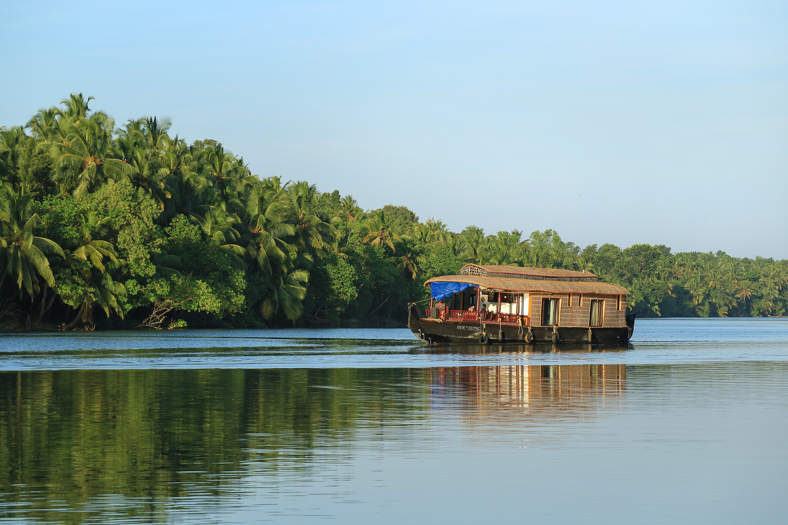
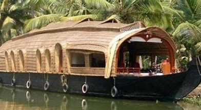
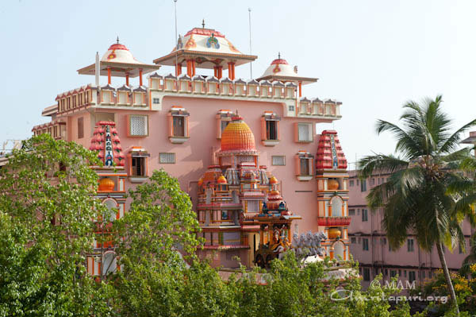
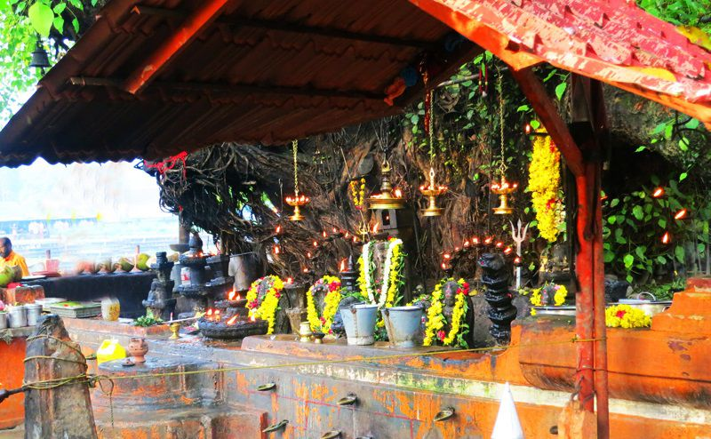
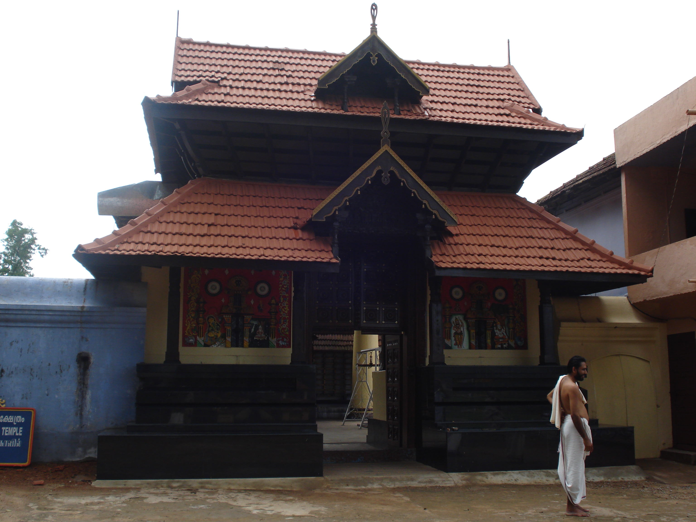
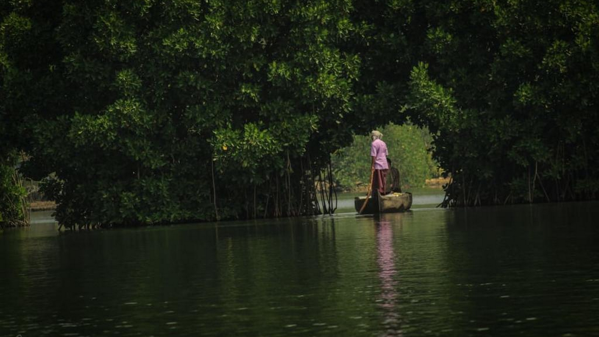
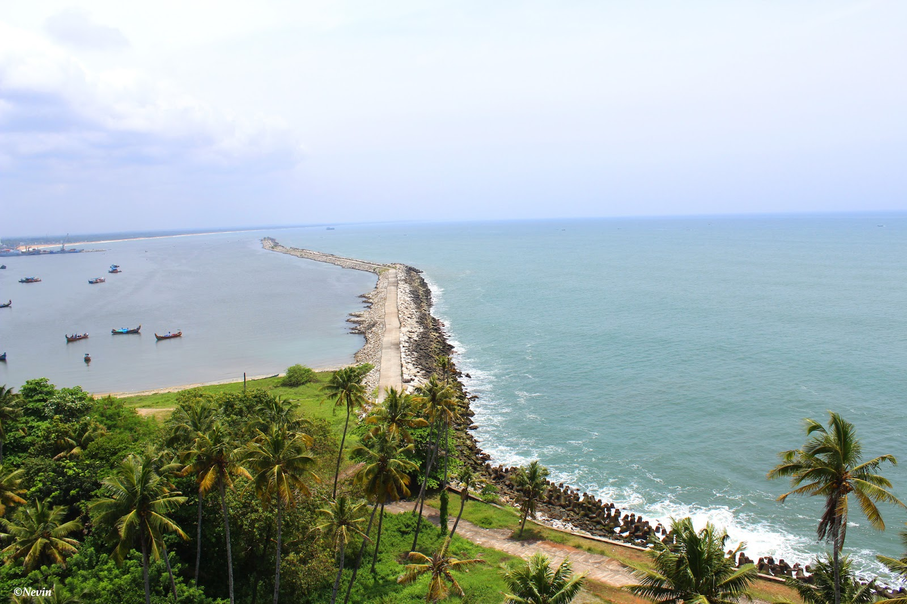
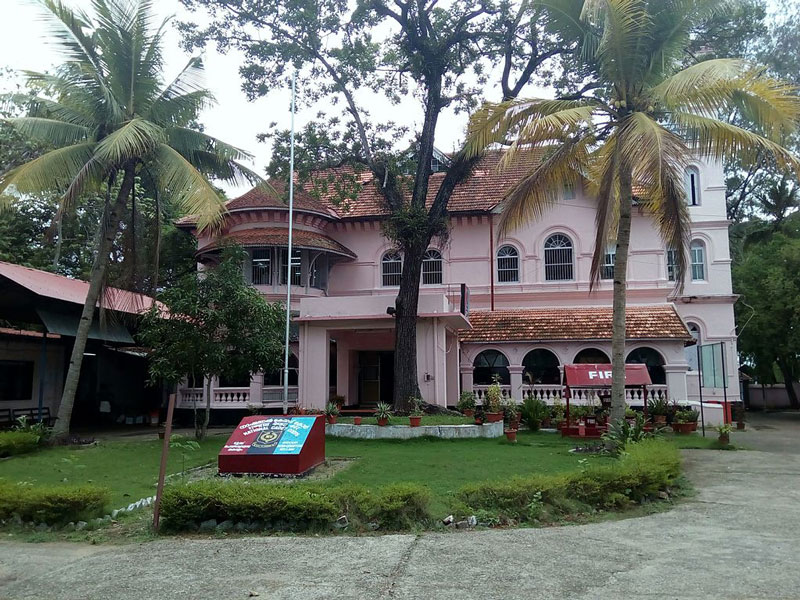

PLACES TO VISIT IN KOLLAM
Ashtamudi Lake

As its name suggests, the Ashtamudi Lake is the congregation of eight backwaters (Ashta= Eight, Mudi= Branch). It is known as the gateway to the well known Kerala Backwaters. It is also a popular destination for houseboat cruises. The peaceful environment coupled with the striking beauty of the place is sure to take any one’s breath away.
Alumkadavu Boat Building Yard

Situated on the northern backwaters of Kollam, Karunagappally is the place where the ‘kettuvalloms’ better known as the houseboats, are made. A boat building and repairing centre, it is also the best place to see coir being made.
Mata Amritanandamayi Ashram

Amritapuri, earlier known as Vallikavu, is the birth place of the eminent spiritual guru, Matha Amritanandamayi. The ashram built in a five acre plot holds a township that includes a post office, bank and library.
Ochira Parabrahma Temple

This temple is one of its kinds because it neither has a main shrine nor an idol to be worshipped. This temple is dedicated to the ‘Para Brahma’, the supreme principle. Ochirakali, is the temple’s annual festival that honors the big battle between the Kayamkulam and Chempakasseri Kings.
Sasthamkotta Dharmasastha Temple

This is a temple dedicated to lord Ayyappa. The monkeys in the surrounding woods are respected by the devotees as they were once believed to be the loyal followers of Dharmasastha, the ruling deity. The ten day annual festival celebrated by the temple includes the colourful Kettukazhcha parade and an elephant procession.
Munroe Island

Named after the British Resident, Colonel Munroe, of erstwhile Travancore, the Munroe Island is a palm covered isle on the backwaters of Kollam. Several tools of the Stone Age and megaliths discovered here, speak volumes about the antiquity of this island.
Thangasseri

Thangasseri was once a trading hub that used gold as currency. This beautiful settlement has a history dating back to the 14th century. A 144 feet lighthouse, built in 1519 is a monument worth seeing. The village celebrated its 500th anniversary in 1999.
Thevally Palace

Built between 1811 and 1819, during the reign of Gauri Parvathi Bai, this palace was the residence of the erstwhile Maharaja during his visits to Kollam. The palace overlooks the Ashtamudi Lake and is best viewed from the lake itself.
Jetayu Para

Jetayu Para, a huge rock, is another attraction in Kollam district. The name comes from the epic Ramayana. It is believed that Jatayu, the giant bird in the epic, fell after failing in its attempt to spot Ravana from taking Sita away. It's an ideal destination for rock climbing for those who love adventure.